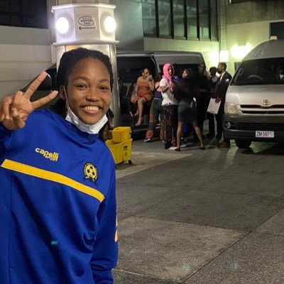

Tumz Baby. @Tumininu__·1m
I was telling Kolajo I haven’t eaten chef kabs in a few months… he said she sef go feel am say we no Dey stabilized😂

Dr. baddie and 5 others liked
Oluwafemi-Eden@oluwafemieden·23hr
MY ESCAPE!
So, on this fateful day, the 8th of December 2020,
I had just relocated to Ibadan from Lagos and stayed in Akobo, Ibadan.
I woke up this morning with the desire to see my younger sister. She is a student of the University of Ibadan and works at Joke Plaza, Bodija.Tumz Baby. @Tumininu__·1m
I was telling Kolajo I haven’t eaten chef kabs in a few months… he said she sef go feel am say we no Dey stabilized😂
Tumz Baby. @Tumininu__·1m
I was telling Kolajo I haven’t eaten chef kabs in a few months… he said she sef go feel am say we no Dey stabilized😂
Tumz Baby. @Tumininu__·1m
I was telling Kolajo I haven’t eaten chef kabs in a few months… he said she sef go feel am say we no Dey stabilized😂